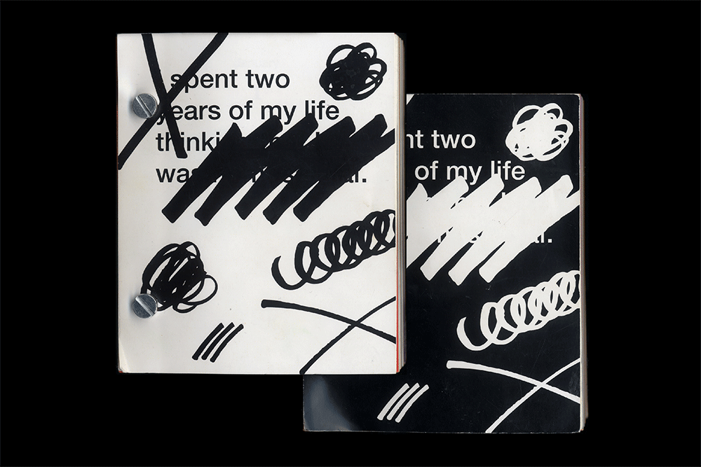

PERSONAL BOWL OF HYGIEIA
2019
Experimental printing technique with stencil using plaster on wood.
A series of specimen books focused on 10 different typefaces used in South Korean and Japanese vintage advertising and magazine cover.
Beyond the sweetness and humour, mascots are a powerful tool for businesses to increase their profit and strengthen their identity. What if we were to use mascots to promote something that doesn’t have anything to do with profit or advertising? In comes the Time Mascot. We have all have an equal amount of time at our disposal, and we all know that we cannot physically possess it. The Time Mascot promotes time which we cannot buy. Isn’t it ironic though? Through promoting something that you cannot buy using mascots, you can buy their promotion products instead. This Time Mascot makes Time purchasable. Even though you cannot buy time itself, the mascot bring it into life. Riso-printed handouts spread to visitors at the exhibition.
TOOLS FOR EXPRESSION
2018
Alongside the printed page, written language is represented in various forms. Public space is illed with messages of all kinds written by the individuals that inhabit it. Through these interventions of self-expression, different forms of written and oral language have been born that go unaccounted for in the history of communication. Each of these methods has its own formal and conceptual qualities, as well as its own history and background. These tools represent an untold history of graphic design that has existed and developed alongside the popular communication tools of print publishing, radio, television and the internet.
A series of posters for the exhibition Tools for Expression held at Quartair and Page Not Found in Den Haag.
Looking at Yami Kawaii movement through the lens of Design.
Looking at Yami Kawaii movement through the lens of Design.
Ancient columns stayed for centuries and centuries, so will also the plastics. Estwo Decor produces columns representing the beautiful ruins through different kinds of food packages and create new landscapes.
Ancient columns stayed for centuries and centuries, so will also the plastics. Estwo Decor produces columns representing the beautiful ruins through different kinds of food packages and create new landscapes.
A series of posters for the lecture by the alumni, Jasmijn Muskens from Interior Architecture and Furniture Design department at The Royal Academy of Art, The Hague.
RICHNESS OF B&W DINNER
2018
“We were supposed to do this as an IST” is a project me and Selina Landis did based on the topic ‘The Richness of Black and White’. Not only is food rich and complex in it’s texture, smell, taste, origin, also the event of a differ is full of traditions, connotations and elements to design, all strongly related to spatiality.
RICHNESS OF B&W DINNER PUBLICATION
2018
“We were supposed to do this as an IST” is a project me and Selina Landis did based on the topic ‘The Richness of Black and White’. Not only is food rich and complex in it’s texture, smell, taste, origin, also the event of a differ is full of traditions, connotations and elements to design, all strongly related to spatiality.
A project we initiated together with Justus Gelberg and Vincent Rheinberger, we used a Google Chrome extension I made which gives users the opportunity to track the path of your mouse movement, while they surf through websites. With this tool, we brought the digital footprint onto stones which is one of the oldest materials were used as medium for communication. By translating impermanent like mouse movement on something permanent, it creates a contrast between the trace one leaves on a website and the fossilization or monumental registration of carvings in stone. The whole process was documented on videos installed as an installation.
Augmented poster for a fictitious event created based on content collected from two real events Baby Jumping Festival and St. Martins Day. Augmented poster appeals when you capture the printed out custom tracker of small piece of the poster with the Augment app.
The non-Dutch speakers do all they can to pronounce the Dutch names of every day grocery shop products, as a bored Dutch voice repeats them, as if he were to say: That’s how we pronounce “aardappelschilmesje”. This simple formula continues for a good five minutes and soon becomes sounding like a mantra. Hypnotized by the silly but visually relaxing, we become aware of the battle between the Dutch and the non-Dutch voices. Who pronounces “spaghetti” better, the cocky Dutch guy whose letter G sounded like it came from the back of his throat, or that charming Italian voice, who earlier pronounced “knakworstjes” a little bit awkward, but oh so cute… Who owns these words, when the origin of it is clearly not ours? Whose culture are we appropriating and vice versa?
Redesign of the Organogram of the Royal Academy of Art, The Hague. We created a system that allows viewers to observe from different positions and in a way that would challenge hierarchy and structure as using clay and 3D software to make an organic and interactive sculpture of our institute and the relationships.
Interview with Laura Pappa
Nujabes is a Japanese record producer, DJ and composer who I honor was presented in the immersive exploration of the grid after having taken a trip to Iran. Check out link featured at Glamcult.
BEFORE&AFTER THROBBER
2017
The world is now “Waiting To Be Beautiful”. Explore the journey of plastic surgery through the throbber.
Notes to the interview Tabita Rezaire did herself about the digital healing activism of SENEB. Silkscreened foldable publication.
Catalogue for an exhibition The Prop Show curated by Bart de Baets. Seventeen props from movies like Love Actually and Memento, from Jurassic Park to The Virgin Suicides, are interpreted and brought to life. The Hand-out can be a helpful guide to find out all there is to know about the project.
Otaku means a person who is obsessed with interests, commonly the anime like subcultures and it is my alter ego. I interviewed some people to pull out what they are obsessed with.
A book can be read both from the front and the back designed for a leaked secret I have been given “I spent two years of my life thinking about I was homosexual”.


IN SEARCH OF THE UNKNOWN
2017
Fahrenheit 451 is the temperature at which book paper burns. The book is something we now take for granted, but it is still a revolutionary tool that has stood the test of time and has revolutionized the way we access information. Paperbacks are still the benchmark device when it comes to reading. They are cheap to produce and economical in their design. An exercise in designing a publication and making typographic choices with copyright-free text, In Search of The Unknown by Robert W Chambers.